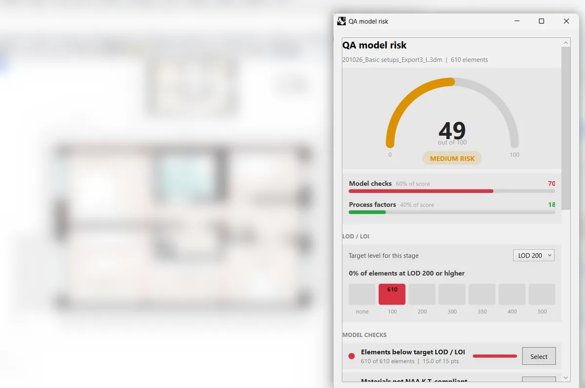

Example · steps 1 to 3 in one tool
QA model risk monitor
It started as a QA checklist after the diagnosis on sheet A-04. Now it scores the risk of errors in the model while you work, against a target LOD / LOI level and NAA.K.T. material naming.
49Medium risk on a 0–100 scale. High risk starts at 50.
- Checks
- Elements without workstation or PP code, one product code with several names, unvalidated products, plates wider than 1,800 mm.
- Score
- 60 % automatic model checks, 40 % process factors such as open feedback items and changes since the last peer check.
- Logged
- “Log snapshot” writes each score to a CSV next to the model, to compare with real feedback rounds.